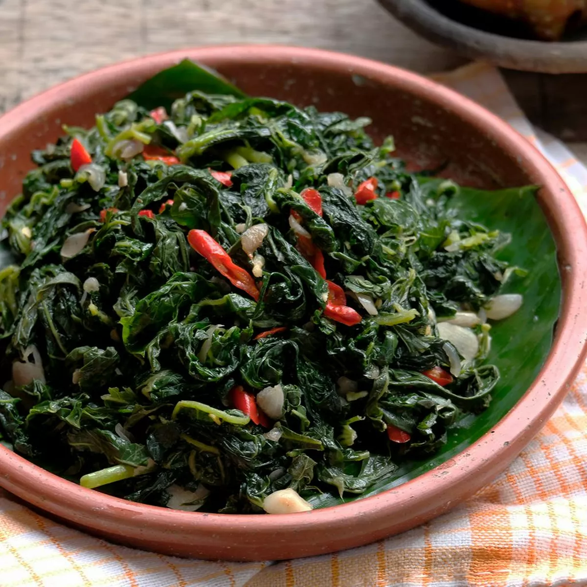

Tumis Daun Singkong Pepaya

Nilai Gizi / Porsi
- Energi: 109,3 kkal
- Protein: 8,7 g
- Lemak: 7,1 g
- Karbohidrat: 6,4 g
Bahan-Bahan
- 100 g daun pepaya muda, rebus, tiriskan, dan iris sepanjang 1 cm
- 200 g daun singkong, rebus, tiriskan, dan iris sepanjang 1 cm
- 20 g ebi, cuci bersih
- 3 sdm minyak jagung
Cara Memasak
- Tumis bawang merah dan bawang putih hingga harum.
- Tambahkan cabai rawit, terasi, lengkuas, dan daun salam kemudian tumis sampai layu.
- Masukkan irisan daun pepaya, daun singkong, ebi, dan garam lalu aduk rata hingga bumbu meresap.
- Setelah matang, angkat dan dapat dinikmati dalam keadaan panas.
Kembali ke Menu